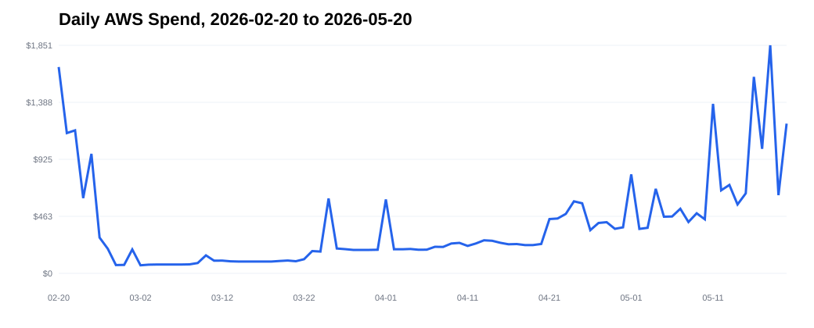
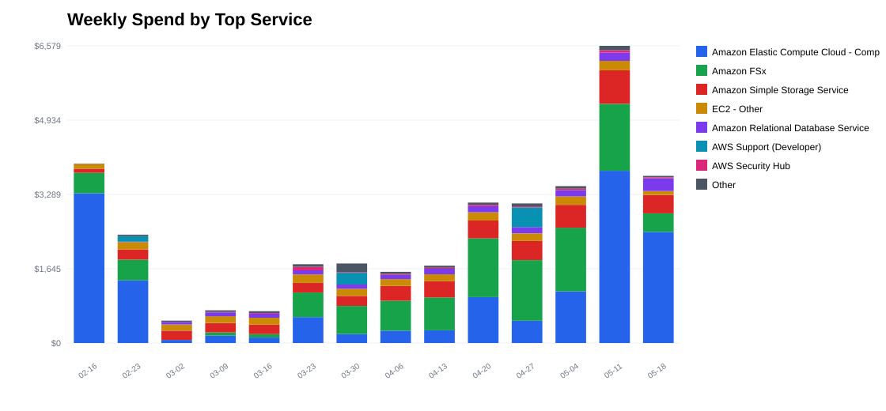
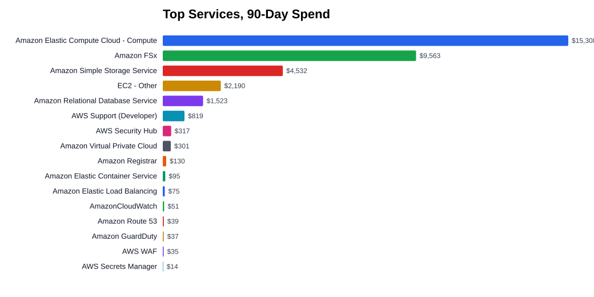
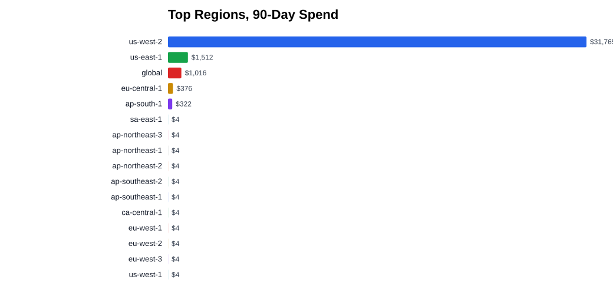
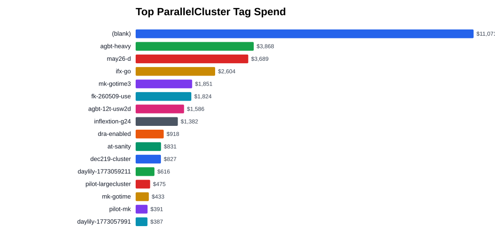
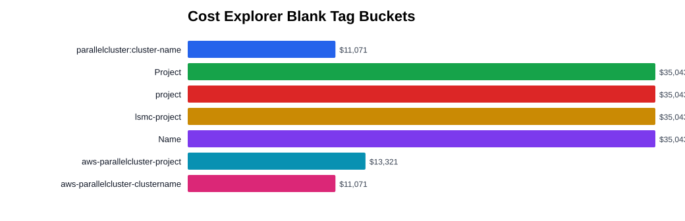
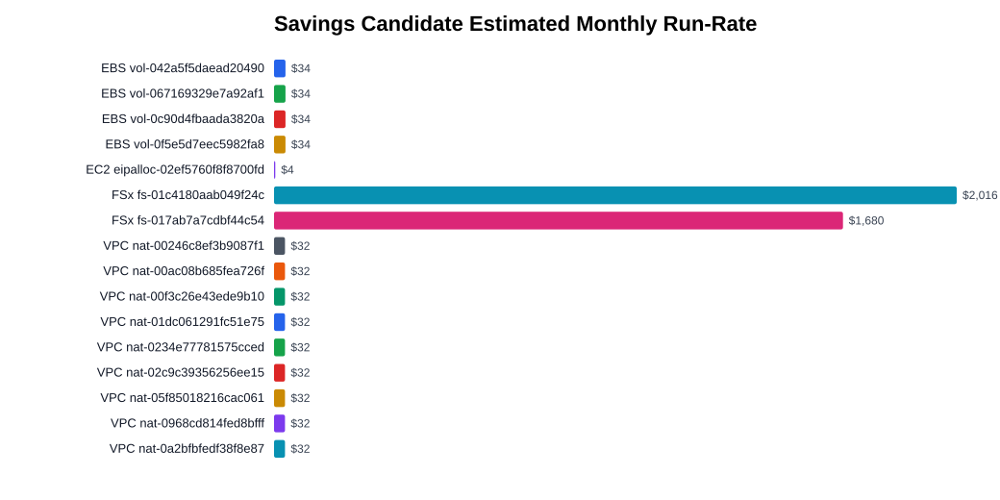

Read-only AWS cost report
AWS 90-Day Retrospective Cost Analysis
No AWS mutations were performed. Tagging, stopping, deleting, lifecycle, retention, and cleanup actions are recommendations only.
Executive Summary
Clearest savings target
The largest live run-rate risk is two active FSx Lustre filesystems: fs-01c4180aab049f24c / XL-pilot at about $2,016 per month and fs-017ab7a7cdbf44c54 / dra-enabled at about $1,680 per month.
Clearest governance gap
Cost Explorer has 100% blank historical buckets for Project, project, lsmc-project, Name, and CloudFormation stack tags. Live resource tags exist, but they are inconsistent enough to block reliable project attribution.
Overview Plots







Time Trend
May month-to-date is the largest segment and was marked estimated by Cost Explorer. The spike is mainly EC2 compute plus FSx and S3 persistence around live and recently deleted ParallelCluster workloads.
| Period | Spend |
|---|---|
| 2026-02-20 to 2026-02-28 | $6,178.49 |
| 2026-03-01 to 2026-03-31 | $4,244.84 |
| 2026-04-01 to 2026-04-30 | $9,334.55 |
| 2026-05-01 to 2026-05-20 | $15,285.37 |
Cost Drivers
Top services
| Driver | 90-Day Spend | Share |
|---|---|---|
| Amazon EC2 Compute | $15,308.47 | 43.7% |
| Amazon FSx | $9,562.84 | 27.3% |
| Amazon S3 | $4,531.77 | 12.9% |
| EC2 - Other | $2,190.19 | 6.2% |
| RDS | $1,522.72 | 4.3% |
Regions
| Region | Spend |
|---|---|
| us-west-2 | $31,764.92 |
| us-east-1 | $1,511.77 |
| global | $1,016.09 |
| eu-central-1 | $376.49 |
| ap-south-1 | $321.61 |
| all other enabled regions combined | $52.44 |
Usage types
| Usage Type | Spend |
|---|---|
USW2-Storage | $9,562.23 |
USW2-TimedStorage-ByteHrs | $4,241.27 |
USW2-SpotUsage:m7i.metal-48xl | $3,861.08 |
USW2-SpotUsage:m7i.48xlarge | $3,200.77 |
USW2-SpotUsage:r7i.48xlarge | $2,713.55 |
USW2-BoxUsage:r7i.2xlarge | $1,637.02 |
USW2-EBS:VolumeUsage.gp3 | $909.68 |
Dollar / AWS Support | $819.07 |
ParallelCluster attribution
The parallelcluster:cluster-name blank bucket is $11,071.44 / 31.6%. Its largest services were S3, EC2 Other, RDS, EC2 Compute, and Support, so this bucket is mostly non-cluster or cluster-adjacent resources without cluster tags.
parallelcluster:cluster-name |
Spend |
|---|---|
| blank / not cluster-tagged | $11,071.44 |
agbt-heavy | $3,868.35 |
may26-d | $3,688.69 |
ifx-go | $2,603.90 |
mk-gotime3 | $1,851.03 |
fk-260509-use | $1,824.33 |
agbt-12t-usw2d | $1,585.74 |
inflextion-g24 | $1,382.12 |
dra-enabled | $917.87 |
at-sanity | $830.78 |
Live Resource And Tag Investigation
Live inventory covered the material spend regions us-west-2, us-east-1, eu-central-1, ap-south-1, global S3 buckets, and a lightweight core sweep of the remaining enabled regions. The low-spend-region sweep found no EC2, EBS, EIP, NAT, FSx, or RDS resources in the remaining regions.
Current active ParallelClusters
| Cluster | Region | Status |
|---|---|---|
XL-pilot | us-west-2 | CREATE_COMPLETE |
dra-enabled | us-west-2 | CREATE_COMPLETE |
Focused collector tag status across 142 live resources
| Tag Status | Count |
|---|---|
| completely untagged | 41 |
| missing cluster/stack | 31 |
missing Name | 28 |
| missing project | 16 |
| other tags only | 8 |
| fully attributed | 18 |
Live resources to tag
| Resource | Problem | Console |
|---|---|---|
labcore-dev-instance-1 RDS | completely untagged | open |
labcore-dev RDS cluster | completely untagged | open |
i-09f66b3f11ea42c60 / labplatform-mvp | Name only, missing project/cluster | open |
i-071ccd80c69969d92 / terrarium-dev-tailscale-router | missing cluster/stack | open |
i-03a38912d7d651f1a / terrarium-prod-tailscale-router | missing cluster/stack | open |
vol-0c69ba6b467620e14 | completely untagged 336 GiB EBS | open |
vol-0ea36895cc2b979ac | completely untagged 336 GiB EBS | open |
vol-0c26833469cf6995a | completely untagged 234 GiB EBS attached to stopped lsmc-web | open |
dra-0e036df15b52f3f85 | FSx DRA has only non-attribution tags | open |
dra-006ba927d666a551f | FSx DRA has only non-attribution tags | open |
lsmc-ssf-sequencing-data | S3 bucket completely untagged, no lifecycle returned | open |
lsmc-dayoa-omics-analysis-us-west-2 | S3 bucket completely untagged, no lifecycle returned | open |
lsmc-healthomics-results | S3 bucket completely untagged, no lifecycle returned | open |
lsmc-ursa-customers-usw2 | S3 bucket completely untagged, no lifecycle returned | open |
Zombie And Savings Candidates
These are review targets, not deletion instructions. The two FSx filesystems are the largest clear savings surface. If their backing data has already been exported and no jobs are active, they should be prioritized for delete-plan review under the usual second-confirmation destructive-action policy.
| Target | Evidence | Estimated Monthly Run-Rate | Console |
|---|---|---|---|
fs-01c4180aab049f24c / XL-pilot FSx | AVAILABLE, 14,400 GiB SCRATCH_2 | ~$2,016 | open |
fs-017ab7a7cdbf44c54 / dra-enabled FSx | AVAILABLE, 12,000 GiB SCRATCH_2 | ~$1,680 | open |
vol-067169329e7a92af1 | unattached 421 GiB gp3 EBS | ~$33.68 | open |
vol-0f5e5d7eec5982fa8 | unattached 421 GiB gp3 EBS | ~$33.68 | open |
vol-0c90d4fbaada3820a | unattached 421 GiB gp3 EBS | ~$33.68 | open |
vol-042a5f5daead20490 | unattached 421 GiB gp3 EBS | ~$33.68 | open |
eipalloc-02ef5760f8f8700fd | unassociated Elastic IP | ~$3.60 | open |
| NAT gateways | ten active NAT gateways across material regions; several missing project/cluster attribution | ~$32.40 each before data processing | inventory CSV |
dayhoff-lsmcq7-tapdb-writer | db.r8g.2xlarge Aurora writer remains available | not estimated | open |
Ursa Production Automation Notes
This report family should be turned into a scheduled producer plus read-only Ursa consumer. Cost Explorer and regional inventory scans should stay off dashboard request paths.
Producer behavior
- Run daily after Cost Explorer data is expected to settle.
- Use explicit config only; missing config fails closed.
- Write versioned artifacts to a configured S3 bucket/prefix.
- Do not infer an S3 bucket from Ursa internal output buckets, cluster tags, default profile state, or service-side discovery.
- Precompute console links, plot artifacts, and stale/error metadata.
Recommended artifact layout
current/summary.json
current/resources.json
current/savings.json
current/report.md
current/plots/*.svg
runs/<run_id>/summary.json
runs/<run_id>/resources.json
runs/<run_id>/savings.json
runs/<run_id>/report.md
runs/<run_id>/plots/*.svgFuture Ursa config keys
cost_report_bucket: <required>
cost_report_prefix: <required>
cost_report_profile: <required>
cost_report_region: <required>
cost_report_max_age_hours: <required>Route/API shape
- Add a read-only admin page such as
/usage/aws-cost. - Add
GET /api/v1/aws-cost-report/current. - Return freshness state, run ID, generated timestamp, report link, plot links, top cost drivers, untagged live resources, and savings candidates.
- Show explicit
missing,stale, orerrorstates when artifacts are absent or too old. - Keep this separate from the existing Ursa spot-pricing monitor; that monitor captures partition spot-price availability, not actual Cost Explorer spend.
Evidence And Artifacts
Cost Explorer evidence is preserved as raw response JSON under docs/aws_3month_retrospective_cost_analysis_assets/raw/; those filenames encode the grouped query dimensions. Read-only command evidence is preserved in inventory_commands.json.
| Artifact | Link |
|---|---|
| Source Markdown report | docs/AWS_3month_retrospective_cost_analysis.md |
| Summary JSON | summary.json |
| Live resources JSON | live_resources.json |
| Untagged live resources CSV | untagged_live_resources.csv |
| Zombie candidates CSV | zombie_candidates.csv |
| Low-spend region sweep JSON | low_spend_region_sweep.json |
Expected metadata misses
- 32 S3 buckets returned
NoSuchLifecycleConfiguration. - 21 S3 buckets returned
NoSuchTagSet. - Those are findings, not collector failures. After filtering those expected metadata misses, there were no unresolved read failures in the focused live inventory.
Limits
- Cost Explorer reflects historical cost and tag activation state; it cannot prove that a historical resource is still running.
- Live scan is current as of 2026-05-21 and may differ from historical spend sources that have since been deleted.
- Live resource coverage is deepest for the material regions and global S3. A core EC2/EBS/EIP/NAT/FSx/RDS sweep of remaining enabled regions found no resources.
- Savings estimates for FSx, EBS, EIP, and NAT are approximate run-rate estimates for prioritization, not invoices.